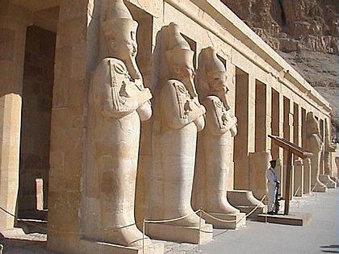

.jpg)
"The Temple At Nieght"
| From Family Number | 18 |
| Built By | Hatshepsut |
| Contruction Period | 15 years |
| Contruction Date | 3500 years |
| Site | Deir El-Bahari,Egypt |
| Place | Luxor |
Hatshepsut was born in 1508 BC, the eldest daughter of King (Thutmose I) and Queen (Ahmose).
King (Ahmose I), the great victory in liberating Egypt from the Hyksos, is considered the great-grandfather of Hatshepsut,
and the founder of the Pharaonic Eighteenth Dynasty to which she belongs.
Hatshepsut was the legitimate heir to the throne of the country, as there was no legitimate male heir,
but she had a half-brother from her father, Thutmose II, from a secondary wife called (Mutt Nefert).
Hatshepsut married her half-brother (Thutmose II), according to the custom of the pharaohs,
who had no choice but to seize the scepter of power to marry Hatshepsut, and she bore him a son and two daughters.
And as for the two daughters, their names are (Nefru-Ra) and (Merrit-Ra Hatshepsut).
Her husband (Thutmose II), gave birth to his son (Thutmose III), from one of the concubines of the royal court, who was called (Eze).
Hatshepsut did not want to innovate in the appearance of the ruling pharaoh that people have familiarized with for decades.
Although at the beginning of her reign she was depicted as a woman in full adornment,
later on she became an example of the strong, muscular pharaoh, who wears a false beard.
She started wearing clothes resembling the clothes of the male Pharaohs who preceded her in official ceremonies,
and she also appeared in some of her statues with a borrowed chin,
as is customary in the statues of the pharaohs.
Although this did not diminish the fact that Hatshepsut had all the qualities of a beautiful female, she had a pleasant burgundy complexion, a slightly hooked nose, and a round face.
And she loved flowers, gardens, trees, and everything that was fragrant, colorful
period of Hatshepsut’s rule was characterized by peace and prosperity,
and her reign was marked by the strength of the army, construction activity,
and the great sea voyages that she sent to trade with neighboring countries,
and under the pharaoh’s sceptre, the woman was able to get rich and prosper,
as she reopened quarries and mines that had been neglected for a long time,
especially copper and Malachite mines in the semi Sinai Island,
work in those mines had stopped during the Hyksos rule of Egypt and beyond,
and we still find in Sinai a plaque with writing documenting this work and glorifying what it did.
Hatshepsut also activated the trade movement with Egypt's neighbors, where trade was in a bad state,
especially during the reign of King Thutmose II,
and re-used a canal linking the Nile at the end of the delta with the Red Sea,
where she cleaned this canal after the Egyptians dug it during the days of the Middle Kingdom,
in order to run the fleet of Egypt The sea with it to go out to the Gulf of Suez and then to the waters of the Red Sea.
She ordered the construction of several facilities at Karnak Temple,
and also built her temple at Deir el-Bahari in Luxor.
Hatshepsut was interested in the Egyptian merchant fleet, so she built large ships, and used them in internal transportation to transport the obelisks that
she ordered to be added to the Karnak temple in glorification of the god Amun,
and in trade exchange missions with its neighbors.
Among the most important are incense, perfumes, spices, plants, tropical trees, predators, and leather.
-Atlantic Ocean Expedition: Queen Hatshepsut sent a large fleet to the Atlantic Ocean, and trade with the Atlantic Ocean flourished to import some types of rare fish.
-Puntland Mission: Queen Hatshepsut sent a trade mission on board large ships navigating the Red Sea loaded with Egyptian gifts
and goods such as papyrus and linen to Puntland (currently Somalia, and southern Yemen),
so the King of Punt received the mission well, then returned loaded with large quantities of animals Predatory, wood, incense, ebony, ivory, leather, and precious stones.
Queen Hatshepsut depicted the news of that mission on the walls of the Deir el-Bahari temple on the western bank of the Nile at Luxor,
and the colors that adorn the drawings of this temple are still bright and retain their splendor and beauty to a large extent.
-The Aswan Mission: Also depicted on the walls of the Deir el-Bahari temple, a description of the mission of Hatshepsut to the granite quarries at Aswan to bring the huge stones for the installations,
and it established two great granite obelisks in Aswan to glorify the god Amun, each amounting to about 35 tons,then they were transferred on the Nile to Thebes and the two obelisks were taken Their place is in the Karnak Temple in Luxor,
and when Napoleon visited during the French campaign against Egypt in 1879, he ordered the transfer of one of the two obelisks to France,
and it still adorns the Place de la Concorde in the French capital, Paris.
Temple of Hatshepsut or the Mortuary Temple of Hatshepsut is a temple from the Egyptian Eighteenth Dynasty, and the best remains of the temples were built about 3500 years ago in Deir el-Bahari in Egypt.
It was built by Queen Hatshepsut on the west bank of the Nile opposite Thebes (the capital of ancient Egypt and the seat of worship of Amun) (today's Luxor).
The Temple of Hatshepsut is distinguished by its unique architectural design, compared to the Egyptian temples that were built on the eastern bank of the Nile in Thebes.
The temple consists of three successive floors on open terraces.
The temple was built of limestone, and in front of the columns of the second floor were erected limestone statues of the god Osiris and Queen Hatshepsut in a beautiful arrangement.
Originally, these statues were colored, and only some traces remain of the colors now, and some statues are in absolutely good condition, indicating the elegance and beauty of the temple's design.
Temple of Hatshepsut is distinguished at the same time that we find on its walls inscriptions of naval missions sent by Queen Hatshepsut to the country of Punt for trade and to bring incense and myrrh from that country.
The pharaohs offered incense to their gods to gain their approval, and many of the pharaohs of Egypt recorded this in paintings on their temples showing them offering offerings and incense to various deities.
In addition to incense and myrrh, the missions of Hatshepsut also transported rare wood, trees and animals not found on the land of Egypt, and tiger furs that were worn by a certain class of the priesthood of Egypt.

The Mortuary Temple of Hatshepsut is located to the right of the Temple of Mentuhotep II
See Map.
The procession road connects the valley temple on the Nile with the mortuary temple of Hatshepsut.
The procession road is about 1 kilometer long. The Valley Temple overlooking the Nile faces the Temple of Amun-Ra at Karnak on the eastern facade of the Nile.
In the past, the procession route was that of rams, and statues of rams were made of sandstones that the ancient Egyptians brought from the Silsilah quarry.
The design of the Temple of Hatshepsut is completely different from the design of the ancient Egyptian temples,
which consisted of a large edifice (a huge gate)
Here the edifice has been replaced by a portico, and the colonnade of columns has been replaced by balconies on top of each other and connected by ramps.
followed by a pillared hall, then a smaller edifice,
then a pillared foyer, then a third edifice and then a pillared hall ending with the sacred mihrab of the god.

A long road about a kilometer from the east leads to the temple, to meet the Great Hall See Map at 7 and the first portico, 8, which consists of a double-pillared hall.
This portico is open to the east, and ends on its right and left with a large statue of Hatshepsut.
The left part of the portico (towards the south) has inscriptions on its walls showing the production processes of two obelisks in Aswan,
and their transportation and installation in the Karnak Temple.
And the right part of the portico (to the north) has inscriptions about hunting birds and fish.
A ramp connects the first portico and the second portico
See Map at 10
The second portico rises above the first portico and also looks towards the east. The left part of this portico consists of a hall called “Punt’s Hall”
on its walls drawings and inscriptions about Hatshepsut’s trade missions to Puntland,
which she conducted in the ninth year of her reign (1459 BC), and the right part has inscriptions expressing the birth of Hatshepsut as the daughter of Amun.
The hall of Punt ends with the mihrab of Hatour See Map at 11 and the hall of the divine birth ends with the mihrab of Anubis.
On the facade of the second portico are 26 statues of Hatshepsut in the form of Osiris, only some of which are still in stature.
On the southern part of the courtyard were hieroglyphic chapels from Hatshepsut, but during the reign of Thutmose III they were covered with drawings and other inscriptions.
From the center of this hall See Map at 13leads to the sacred chamber of Amun-Ra See Map at 14.
The central hall on the second balcony is called the "Celebration Hall" and the inscriptions on its walls show pictures of the procession from the Valley Temple to the Mortuary Temple.
On its walls there are several mihrabs in which there were statues of Hatshepsut.
The foyer of Punt ends with a small portico that enters the niche of Hatour.
The tops of the medial columns end with vertices representing the head of Hator.
This portico leads to an entrance to the foyer of columns that enter the mihrab.
"The Temple At Nieght"
.jpg)
"Puntland Expedition"
.jpg)
"The Sun Passes"